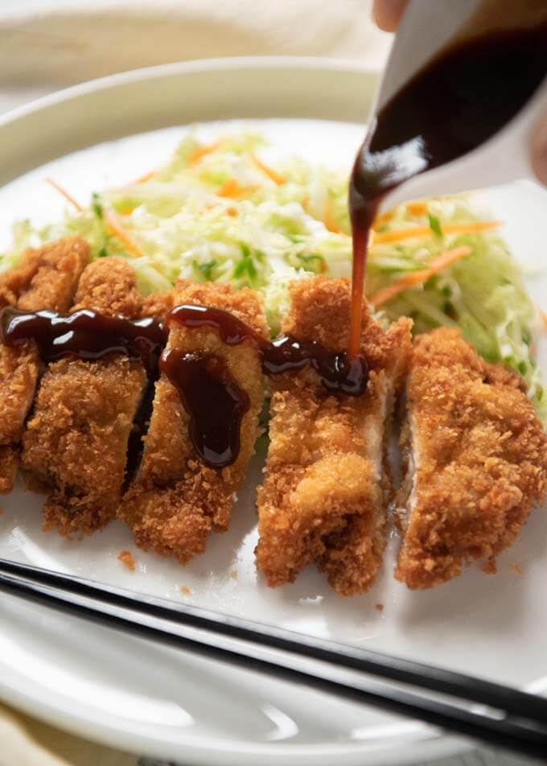

Home
Japanese Chicken Cutlet
Description: A tenderized chicken fillet coated in crispy panko breadcrumbs
and deep-fried to a golden brown.

Ingredients:
- 4 chicken thigh fillets (skinless & about 150g each)
- salt and pepper
- 30g flour
- 1 egg beaten
- 1 cup panko breadcrumbs
- Oil to deep fry
- tonkatsu sauce
Prep:
- In three seperate bowls or plates place beaten egg, flour, and panko
- If chicken thickness uneven cut into thickeness without cuting all the way thru and open.
season chicken with salt and pepper
- for each fillet first coat with flour, shake excess off, then coat in egg.
Allow excess to drip off, then cover in panko. repeat for rest
Cook:
- Heat oil in a deep-frying pan to 350F (enough oil to just about submerge chicken)
- Gently place fillet into the oil. Can fry multiple at a time but dont over crowd pan
- Fry for about 3 min or until the bottom side is browned. Flip and cook for another 3 min.
- Transfer onto a tray lined paper towels to drain excess oil. Rest for 5 min.
- After cooking all cutlets cut into strips and serve with tonkatsu sauce.